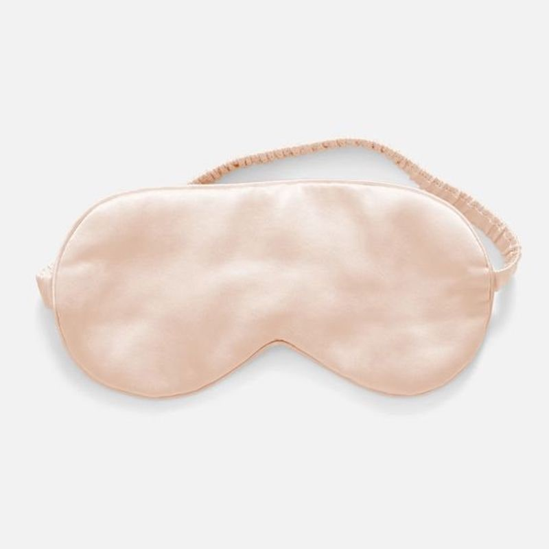
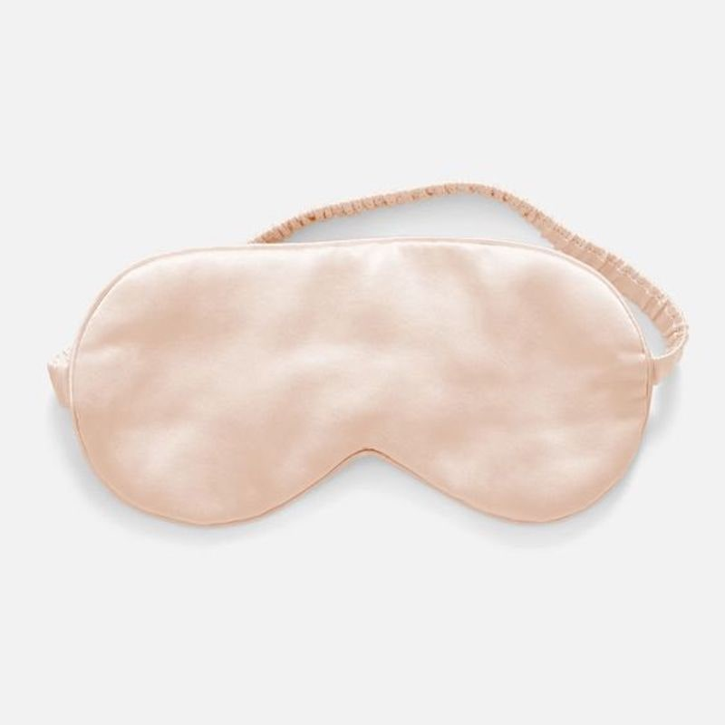
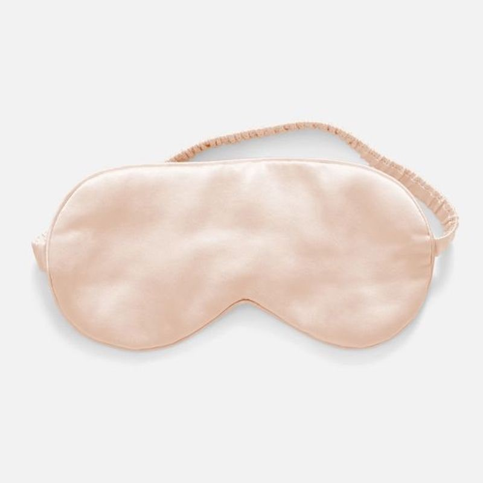

.jpeg) 

PURE SILK LUXURY 100% PURE MULBERRY SILK EYEMASKS

Pure Silk Luxury 100% Pure Mulberry Silk EyeMasks - Ivory
Product Discription
LUXURIOUS MATERIAL: The 22mm sleep masks not only made of 22 Momme 100% 6A Grade Mulberry Silk on both sides, but also filled with 100% mulberry silk, super soft, smooth & breathable. The higher the momme, the thicker the silk. It is more durable and comfortable, most gentle on delicate facial skin.
UNIQUE DESIGN: 100% silk wrapping strap- not like elastic strap!, Won't tangle hair. More care for your hair and skins, good for side sleepers as well.
LIGHT WEIGHT silky soft sleep mask. It is ergonomic designed by relieving stress and relaxing muscles. providing the best experience of sleep.
HELP SLEEP: To create a good sleep environment, can cover the light irradiation on the eyes, eliminate interference, so that you have a comfortable, quiet sleep. At the same time, it can promote blood circulation eye, slow eye congestion, prevent dark circles, bags under the eyes. Enjoy sleep anytime and anywhere, whether it is at home, in a hotel or on the plane.
Available in 6 colors: Black, Blush, White and Ivory
Chemical-free, non-dyed, no color shading or fading
COMPLETE PURCHASE USING
.png)